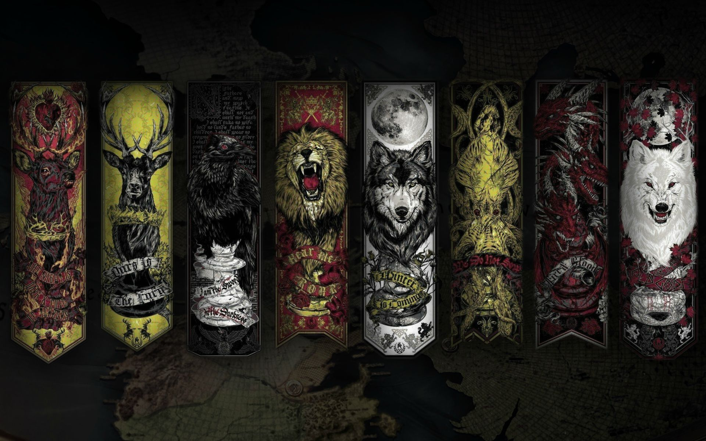

S+, A, B, C, and D House Tiers
These tier rankings are based off of house importance, longevity, success, neg/positive impact to the realm and impact in general. While a lot of these houses contain very cool characters overall, many of them didn't last too long and in comparison to other houses didn't have to make as important decisons with big impact. And some houses just belong right at the bottom, maybe out of personal spite, but regardless they're going on the bottom. And sadly just because Podrick carries for his house, Payne is still a definite D. This also doesn't include every single house so there are some missing, but for the most part the well known ones are included.
The Tiers
S+ (The Triple OG'S) Stark, Targaryen, Lannister
A: Baratheon, Martell, Tyrell, Greyjoy
B: Mormont, Blackwater (Bronn), Reed, Arryn, Tully, Baelish, Frey, Bolton
C: Seaworth, Clegane, Tarly, Tarth
D: Karstark, Umber, Payne, Glover, Royce
I know putting Payne and Seaworth so low is kind of an insult to Podrick and Davos, but given the critera it's hard to rank them much higher. One of my personal favorite houses that I belive deserved a better story line and ending is Martell. Such an eccentric and strange house but Oberyn was so loveable and I wanted him to get revenge for his sister so badly. I hate that the Clegane house was so split, The Mountain was a cool character I admit but such a flaming piece of work. His brother, The Hound, grew on me greatly when he had the story arch with Arya and I wish he had a better ending honestly. A lot of loveable characters I ranked low but that's also partly due to poor writing towards the end of the show.
Honorable Mentions for Personal S+ Tier for Loyalty, Likeness, and Epic Moments
- Brienne of Tarth
- Podrick Payne
- Bronn of the Blackwater
- Sandor Clegane (The Hound)